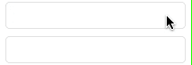
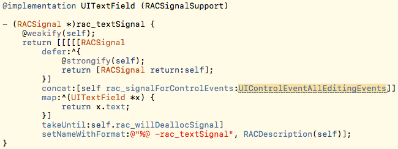
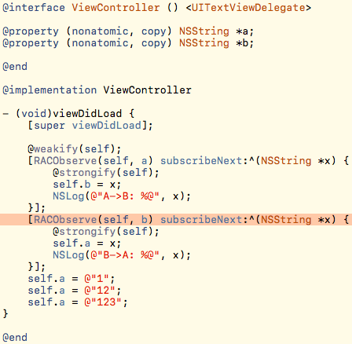
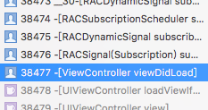
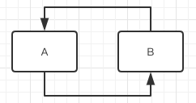
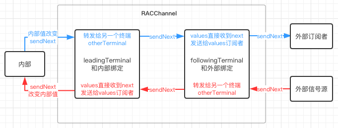
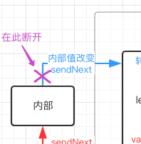

| 更新时间 | 更新内容 |
|---|---|
| 2017-07-27 | 发布 |
在某些场景下，我们需要把两个数据相互绑定，A的改动影响B，B的改动也影响A。
为了表现上容易观察，我们先假设有一个同步两个文本框输入内容的需求。
RAC(self.textFieldA, text) = self.textFieldB.rac_textSignal; RAC(self.textFieldB, text) = self.textFieldA.rac_textSignal;
实现两个文本框，用上面的代码相互绑定，然后观看效果：

可以看到所得到的效果和我们想要的是一致的。但是这只是一个比较凑巧的案例，因为UITextField的rac_textSignal监视的其实是UI事件：

在UITextField的text属性改变时，不会触发rac_textSignal。所以在A->B的信号影响了B的text时，不会触发B->A的信号。
而对于通常的数据来说进行双向绑定就会出错，代码和错误直接一图流甩出来先：

看一眼错误的根源：

可以看到这里出错的原因就是调用堆栈溢出了。因为双向绑定完成后，A的改动影响了B，然后B的改动又会影响A，形成了一个信号循环：

打破这个循环的方法也很简单，在信号订阅的block体内进行数据改动时，想办法不发出信号：
@weakify(self);
[RACObserve(self, a) subscribeNext:^(NSString *x) {
@strongify(self);
self->_b = x;
NSLog(@"A->B: %@", x);
}];
[RACObserve(self, b) subscribeNext:^(NSString *x) {
@strongify(self);
self->_a = x;
NSLog(@"B->A: %@", x);
}];
在这里我们使用成员变量去修改A和B就可以了，完美搞定。
但是这不是万能的，存在很多缺陷：
RAC(self, a) = RACObserve(self, b);这样优雅的写法了。在这个时候，RACChannel就随需要出现了。
当然看RACChannel要先看RACChannelTerminal，RACChannelTerminal它是一个RACSignal同时也是一个RACSubscriber，就是说它能发出信号也能订阅信号。我们之后称呼它为终端，它在初始化的时候传入了两个值：
values：终端自己对应的RACReplaySubject（作为RACSignal使用）。外部订阅终端时订阅的实际上是values。otherTerminal：另一个终端对应的RACReplaySubject（作为RACSubscriber使用），终端在订阅外部信号后会把收到的信号都转发给otherTerminal。RACReplaySubject是一种特殊的RACSubject，它可以向新的订阅者重新发送一遍之前所发过的信号。初始化RACReplaySubject的时候会要求设置一个capacity，默认值为NSUIntegerMax，RACReplaySubject会replay最多capacity个发过的next信号。值得注意的是，completed和error信号是始终会replay的，和capacity设置的大小无关。
我们回过头来看RACChannel的完整代码：
@implementation RACChannel
- (instancetype)init {
self = [super init];
// We don't want any starting value from the leadingSubject, but we do want
// error and completion to be replayed.
RACReplaySubject *leadingSubject = [[RACReplaySubject replaySubjectWithCapacity:0] setNameWithFormat:@"leadingSubject"];
RACReplaySubject *followingSubject = [[RACReplaySubject replaySubjectWithCapacity:1] setNameWithFormat:@"followingSubject"];
// Propagate errors and completion to everything.
[[leadingSubject ignoreValues] subscribe:followingSubject];
[[followingSubject ignoreValues] subscribe:leadingSubject];
_leadingTerminal = [[[RACChannelTerminal alloc] initWithValues:leadingSubject otherTerminal:followingSubject] setNameWithFormat:@"leadingTerminal"];
_followingTerminal = [[[RACChannelTerminal alloc] initWithValues:followingSubject otherTerminal:leadingSubject] setNameWithFormat:@"followingTerminal"];
return self;
}
@end
首先RACChannel创建了两个RACReplaySubject，这是内部的数据通信管道主要组件。
其中followingSubject的capacity为1，表示会replay最后一次的信号。因为followingSubject是供外部订阅用的，所以首次被订阅时需要给外部一个初始值。
然后这两个RACReplaySubject相互监视了对方的completed和error信号（ignoreValues用于排除next信号），这是为了保证两个Subject始终同步，不会其中一个已经终止了另一个还在工作。
最后创建了两个终端将这两个Subject相互绑定，终端所做的工作图示如下：

总体看下来，RACChannel的设计思想上就是提供两个终端，每个终端各有一个输入口和一个输出口，一个终端负责和内部数据绑定，一个终端暴露出来供外部数据绑定。上图把外部订阅者和外部信号源分开来写，表示它们可能是不同的对象，当然它们也可以是相同的对象（如另一个RACChannel的终端）。一般来说封装好的供使用的RACChannel会将其中一个终端在内部处理好，暴露另一端供使用者进行输入和输出的绑定。
这么看下来，是不是创建个RACChannel，把四个口绑定好就可以双向传输数据了？试一试：
RACChannel *channel = [RACChannel new]; RAC(self, a) = channel.leadingTerminal; [RACObserve(self, a) subscribe:channel.leadingTerminal]; RAC(self, b) = channel.followingTerminal; [RACObserve(self, b) subscribe:channel.followingTerminal];
然后，你会再次得到调用堆栈溢出的错误。😂
因为RACChannel只是实现了双向绑定的设计思想，并没有帮我们处理循环调用的问题。我们在使用RACChannel的时候一般是需要使用它的子类，或者自己设计好代码在某条信号通路上进行打断。
看了那么多代码和原理，是时候晒一下简便正确的写法振奋人心了。想要实现A和B双向绑定，其实一句就可以：
RACChannelTo(self, a) = RACChannelTo(self, b);
这就是前文提到的在内部实现好循环调用终止条件的RACChannel了。
我们把RACChannelTo(self, a)先展开来，看一下它到底做了什么：
[[RACKVOChannel alloc] initWithTarget:self keyPath:@"a" nilValue:nil][@"followingTerminal"]
如果你对宏定义展开的细节感兴趣，我觉得sunny的这篇博客可以帮到你。
可以看到这段代码首先创建了一个RACKVOChannel，RACKVOChannel里主要做的两件事就是leadingTerminal的sendNext和leadingTerminal和subscribeNext，这个从前面一点点读下来的读者应该都能明白，是将目标的指定属性和RACKVOChannel的leadingTerminal做好绑定。
我们主要关注的是，RACKVOChannel在哪里打断了信号通道的循环调用。先看subscribeNext段里这一部分：
// Set the ignoreNextUpdate flag before setting the value so this channel // ignores the value in the subsequent -didChangeValueForKey: callback. [self createCurrentThreadData]; self.currentThreadData.ignoreNextUpdate = YES;
注释写得比较清楚，这个ignoreNextUpdate使得下一次的值修改被忽略。具体的忽略代码在sendNext段：
// If the change wasn't triggered by deallocation, only affects the last
// path component, and ignoreNextUpdate is set, then it was triggered by
// this channel and should not be forwarded.
if (!causedByDealloc && affectedOnlyLastComponent && self.currentThreadData.ignoreNextUpdate) {
[self destroyCurrentThreadData];
return;
}
在ignoreNextUpdate为YES的时候，这里就会return出去，不会触发sendNext操作。
用图片标记的直观点，就是如果是在leadingTerminal的subscribeNext里修改了目标的属性值，通路会在此打断，不会重复的再把属性址改变的信号sendNext出去：

我们看一下这段代码：
@implementation RACKVOChannel (RACChannelTo)
- (RACChannelTerminal *)objectForKeyedSubscript:(NSString *)key {
NSCParameterAssert(key != nil);
RACChannelTerminal *terminal = [self valueForKey:key];
NSCAssert([terminal isKindOfClass:RACChannelTerminal.class], @"Key \"%@\" does not identify a channel terminal", key);
return terminal;
}
- (void)setObject:(RACChannelTerminal *)otherTerminal forKeyedSubscript:(NSString *)key {
NSCParameterAssert(otherTerminal != nil);
RACChannelTerminal *selfTerminal = [self objectForKeyedSubscript:key];
[otherTerminal subscribe:selfTerminal];
[[selfTerminal skip:1] subscribe:otherTerminal];
}
@end
objectForKeyedSubscript:提供了通过键@“followingTerminal”读取终端的能力，setObject:forKeyedSubscript:提供了通过键@“followingTerminal”设定和绑定终端的能力。
绑定的操作其实就是将两个followingTerminal相互订阅。注意因为两端数据是同步的，所以在正向订阅后两端的值应该一样了，所以在反向绑定的时候就可以skip:1来节约点性能了。
总之进行通常数据的双向绑定，RACChannelTo基本就是无敌的，几乎可以完成绝大部分需求了。
RAC库对常用的组件都进行了扩展方便我们使用，下面举几个例子。
- (RACChannelTerminal *)rac_channelTerminalForKey:(NSString *)key;
为指定的key创建一个双向绑定用的RACChannel，在内部和RACKVOChannel做了同样的切断循环操作。注意这里返回的是followingTerminal。
- (RACChannelTerminal<NSString *> *)rac_newTextChannel;
为文本的变更创建一个双向绑定用的RACChannel，因为本文最前面提到的原因，文本变更信号是从UI事件触发的，接受新的文本是设置到text属性的，所以两者相互独立本来就不会循环调用。另外注意这里返回的是leadingTerminal，使用上要特别注意的是初次绑定的时候不会触发一次初始化信号，这样正好可以方便配合别的followingTerminal使用而不需要进行skip:1。
其它的UI控件的RACChannel扩展和UITextField都类似。
这里是一个和ViewModel进行绑定的例子：
// 如果仅需要单向绑定，使用rac_textSignal // RAC(self.viewModel, username) = self.usernameTextField.rac_textSignal; // 如果需要双向绑定，则使用rac_newTextChannel RACChannelTo(self.viewModel, username) = self.usernameTextField.rac_newTextChannel;
需要注意的一点是，每一次调用rac_newTextChannel都是创建一个新的RACChannel，如果需要进行多次重复使用，请自行把获得的RACChannelTerminal保存下来。
如果是NSUserDefaults和UITextField双向绑定，可以手动写一下订阅：
RACChannelTerminal *userDefaultsTerminal = [[NSUserDefaults standardUserDefaults] rac_channelTerminalForKey:@"username"]; RACChannelTerminal *textfieldTerminal = self.usernameTextField.rac_newTextChannel; [textfieldTerminal subscribe:userDefaultsTerminal]; [userDefaultsTerminal subscribe:textfieldTerminal];
不得不说RAC的作者大神们伟大之极，当之无愧的ObjC新纪元开创者。RACChannel思路简单但是实现起来真的不简单，阅读代码慢慢理解RAC的精华实在是一种愉悦～